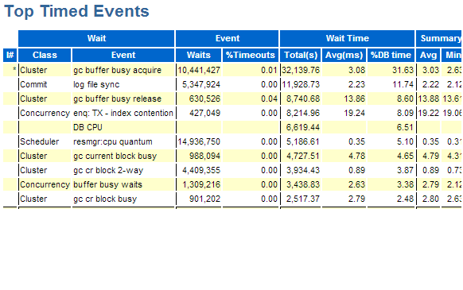
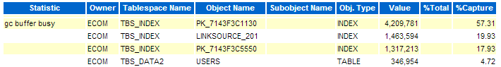

This was first published on https://www.dbi-services.com/blog/oracle-partitioned-sequences-a-future-new-feature-in-12c/ (2014-02-20)
Republishing here for new followers. The content is related to the versions available at the publication date.
.
Disclaimer: I’ll talk about an undocumented feature that appeared in Oracle 12c – undocumented except if you consider that being exposed in DBA_SEQUENCES as the PARTITION_COUNT is a kind of documentation. So, as the syntax is not documented (I got it only by guessing), you should not use it in production: there are probably some reasons why Oracle did not expose an interresting feature like that.
Remark: Sorry for the formatting of this post. I tried to use nice tables instead of monospace code, but that was not a success.
In these days, you probably have most of primary keys coming from a sequence: a generated number that is always increasing in order to be sure to have no duplicates. And of course you have a (unique) index on it. But what do you see when you have a high activity inserting rows concurrently to that table ?
Here is what you can see:


No doubt: index hot block contention on primary key.
It is a well know issue. Because the index is sorted, the value coming from the sequence is always going to the last block. All sessions have to access to the same block and there is a ‘buffer busy wait’ contention on it. And when you are in RAC that block has to be updated by the different nodes and it’s worse, showing all those ‘gc’ wait events.
In order to illustrate the different solution, I have created a DEMO table with 1 million rows. And then I insert 100000 additional rows and check how many blocks where touched:
create table DEMO_TABLE (id,n , constraint DEMO_PK primary key(id) )
as select rownum,rownum from
(select * from dual connect by levelAnd here is the number of index blocks touched:
select object_name,data_object_id,sum(tch) from sys.x$bh
join user_objects on user_objects.data_object_id=x$bh.obj
where object_name like 'DEMO%'
group by object_name,data_object_id order by 1 desc;
| OBJECT_NAME | DATA_OBJECT_ID | SUM(TCH) |
|---|---|---|
| DEMO_TABLE | 97346 | 243 |
| DEMO_PK | 97347 | 243 |
And I’m interrested about index block split as well:
select name,value from v$mystat
join v$statname using(statistic#)
where name like 'leaf node%splits';
| NAME | VALUE |
|---|---|
| leaf node splits | 200 |
| leaf node 90-10 splits | 200 |
I touched 200 blocks only (the size of the index entry is approximatively the same as the table row size). The highest block is filled with an increasing value and only when it is full the insert allocates a new block and goes to it. This is optimal for one session, but it is the cause of contention on multi-threaded inserts because all sessions are touching the same block at the same time.
So what’s the solution ? Of course, you want to have your primary key value distributed.
Reverse index ? Let’s see:
alter index DEMO_PK rebuild reverse;
Index altered.
Then I run the same inserts and here are the statistics about index blocks:
| OBJECT_NAME | DATA_OBJECT_ID | SUM(TCH) |
|---|---|---|
| DEMO_TABLE | 97349 | 247 |
| DEMO_PK | 97352 | 4392 |
| NAME | VALUE |
|---|---|
| leaf node splits | 182 |
| leaf node 90-10 splits | 0 |
Now I touched 4000 blocks (without any block split because each new value fit in the 5% pctfree after my index rebuild). Great: no contention. I mean… no buffer contention.
But think about it. Because of my reverse distribution, I touch now all the index blocks. Do they fit in my buffer cache anymore ? Probably not. And one day, when I have more data, I encounter i/o issues.
If you want to see an illustration of the contentions I am talking about here, you can check the slides 14 to 19 from the Oracle Real Performance Tour where Tom Kyte, Andrew Holdsworth & Graham Wood have shown a nice demo of that.
So we want to spread the values on several index blocks, but not on all index blocks. Hash partitioning can be used for that. Let’s have 4 partitions:
alter table DEMO_TABLE disable constraint DEMO_PK;
create index DEMO_PK on DEMO_TABLE(id) global partition by hash(id) partitions 4;
alter table DEMO_TABLE enable constraint DEMO_PK;
and the result is quite good:
| OBJECT_NAME | DATA_OBJECT_ID | SUM(TCH) |
|---|---|---|
| DEMO_TABLE | 97353 | 245 |
| DEMO_PK | 97357 | 76 |
| DEMO_PK | 97358 | 76 |
| DEMO_PK | 97359 | 76 |
| DEMO_PK | 97360 | 76 |
| NAME | VALUE |
|---|---|
| leaf node splits | 213 |
| leaf node 90-10 splits | 213 |
I’ve distributed my inserts over 4 partitions, having 4 hot blocks instead of one. This is a way to prevent buffer busy waits when having a few concurrent sessions inserting new values.
But the distribution is done on the value coming from the sequence. So each session will touch sequentially each of the 4 hot blocks. Even if this reduces the probablility of contention, it is not optimal. And if you’re going in RAC you will see those ‘gc’ wait events again, with the hot blocks being accessed by all nodes.
The actual solution to the problem is not to distribute the insert based on the value, but having the distribution key based on the session identification. If each session has its own index block to insert into, then all contention is gone.
This is exactly what will be addressed by the ‘partitioned sequence’ feature that is not (yet) documented.
It generates sequence values in different ranges of value. And that range depends on the session (probably a hash function on the instance number and the session id).
I come back to my non-partitioned no-reverse index, and alter the sequence as:alter sequence DEMO_SEQUENCE partition 4;
And here is the stats about index blocks:| OBJECT_NAME | DATA_OBJECT_ID | SUM(TCH) |
|---|---|---|
| DEMO_TABLE | 97361 | 397 |
| DEMO_PK | 97364 | 404 |
| NAME | VALUE |
|---|---|
| leaf node splits | 351 |
| leaf node 90-10 splits | 351 |
First, you see that my table is larger. This is because the sequence number from the partitioned sequence is larger. It is build by prefixing the sequence number with a partition value, and that makes the binary representation larger. The table here have only two columns, but on a real table, the difference will not be so important. The index is bigger, that’s a fact. However if you compare it with the reverse index (that has a lot of free space in the blocks) it is much better here. And you can reduce the sequence max value if you want a smaller id. But the very good thing is that the instances and sessions will work on different ranges, avoiding block contention, while keeping the index maintenance optimal in buffer cache.
Here is my sequence:
select sequence_name,min_value,max_value,last_number,partition_count from user_sequences;| SEQUENCE_NAME | MIN_VALUE | MAX_VALUE | LAST_NUMBER | PARTITION_COUNT |
|---|---|---|---|---|
| DEMO_SEQUENCE | 1 | 9999999999999999999999999999 | 10100000 | 4 |
Ok, that feature is really nice, but you can’t use it until it is documented in a future release. So you have to do it yourself: concatenate a value hased from the instance/session in front of the number coming from the sequence. Of course, at the Real Performance Tour the undocumented solution was not raised, and the solution presented was prefixing the sequence. Here is just as an example:
insert into DEMO_TABLE
select 1e30*mod(to_number(sys_context('userenv','sid')),4)+DEMO_SEQUENCE.nextval,...
and here are the index statistics:| OBJECT_NAME | DATA_OBJECT_ID | SUM(TCH) |
|---|---|---|
| DEMO_TABLE | 97365 | 351 |
| DEMO_PK | 97366 | 351 |
| NAME | VALUE |
|---|---|
| leaf node splits | 433 |
| leaf node 90-10 splits | 371 |
So while dreaming about a feature that you may be able to use in the future, you can acheive the same goal if you’re ready to change your code. Anyway, achieving scalability, and good performance on high load often requires to touch the code a bit.
If you want to see that feature documented, maybe voting up here can help.